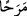

eğlence, edebsiz sözleri dinlemekte kullanmakla olur. Kulağın adâleti ise Kur’ân, hadis,
ilim, hikmet, vaaz ve nasihat, iyilik ve hak sözleri dinlemekte kullanılmasıdır.
Kur’an’ın güzergahı öğüt ve nasihattir, kulak ver
İftirâ ve bâtıl şeyleri dilemeye gayret etme
Gözün zulmü, haram kılınan ve şehvet uyandıran şeylere bakmak, dünyalık hususlarda
kendinden üstün olanlara, dinî meselelerde ise kendinden düşük olanlara bakmakla,
dünya malına ve süsüne ve güzelliklerine bakmakla olur. Gözün adâleti ise Kur’ân’a,
ilimlere, âlimlerin ve sâlihlerin yüzüne, Allah’ın rahmetinin eserlerine, öldükten sonra
yeryüzünü nasıl dirilttiğine ve eşyaya ibret nazarıyla bakmakla mümkündür. Dünyalık
hususlarda kendinden düşük olana, dînî hususlarda ise kendinden üstün olana bakmak da
gözün adâletindendir.
Şu iki göz, Hakk’ın san’at ve îcâdını görmek içinse ne âlâ
Yoksa kardeşinin ayıbını görmek için değildir
Hz. Ali (r.a.)’dan sâbittir ki o, Rasûlullah (a.s.)’in yüzüne bakan gözlerin avret
mahalline bakmasının uygun olmamasına binâen gözü Rasûlullah (s.a.)’e iliştikten sonra
avret mahalline bakmamıştır. Sen de bundan ibret al ve edeb sâhibi ol. Hz Osman
(r.a.)’ın sözleri de bunun benzeridir: “Müslüman olduğumdan beri yalan söylemedim.
Rasûlullah (s.a.)’e bey‘at ettiğim günden beri sağ elimle avret mahallime dokunmadım.
Kur’ân’ı okuduğumdan beri pırasa ve benzerlerini yemedim.”[88]
Kalbin zulmü ise kin, hased, düşmanlık, dünya sevgisi ve Allah’tan başka şeylerle
ilgilenmeyi kabul etmesidir. Adâleti ise kınanan bu huylardan temizlenmesi, aksi
huylarla bezenmesi ve Allah Teâlâ’nın ahlâkıyla ahlâklanmasıdır.
Peyderpey aynadan kiri tozu temizle
Çünkü kirli paslı ayna cila tutmaz
37. Yeryüzünde böbürlenerek yürüme. Çünkü sen (ağırlık ve azametinle) ne yeri
yarabilir ne de boyca dağlara erişebilirsin.
“Yeryüzünde böbürlenerek yürüme.” Burada yürümenin “yeryüzünde” diye
kayıtlanması daha iyi anlatmak içindir. Kâşifî de şöyle der: “
Merahan” tekebbür ile
salınarak yürümek demektir. Yâni mütekebbirlerin salınarak yürüdükleri gibi yürüme.”
Maksad böbürlenerek yürümenin yasaklanmasıdır.